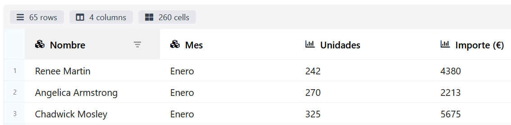
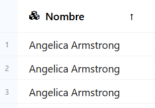
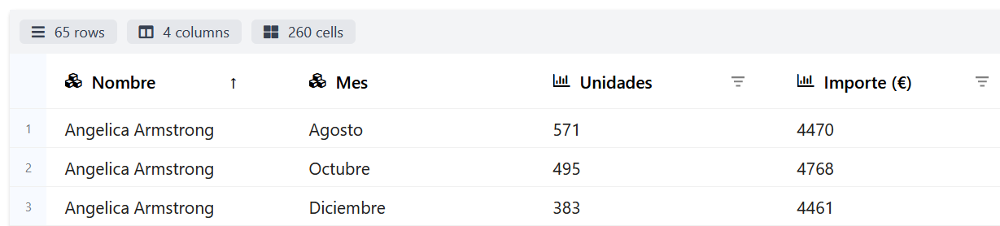
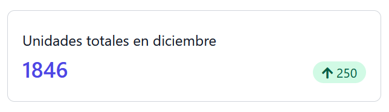

2 - Disseny d'informes
Disseny d'informes
En aquest apartat aprendrem a elaborar informes a la nostra aplicació amb DataPane, una llibreria Python que permet crear informes amb diferents elements (com taules i gràfics) que es generen en format HTML. Aquesta llibreria es distribueix baix la llicència de programari lliure Apache 2.0.
DataPane permet emmagatzemar els informes generats com un fitxer HTML local, o també pujar-los a la plataforma datapane.com,on s'afegeixen algunes funcionalitats addicionals. Per poder pujar els informes, cal tenir un compte que podem crear de manera gratuïta a la web.
Podem instal·lar la llibreriaDataPane amb l'ordre següent:
| Python | |
|---|---|
Als enllaços de la unitat trobaràs la referència a la pàgina de la documentació de DataPane on es tracta la instal·lació de la llibreria.
Preparació de les dades
Com hem comentat a l'apartat anterior, els orígens de dades per elaborar un informe poden ser molt diversos. Per simplificar aquest aspecte al màxim, els informes creats amb DataPane tenen un únic origen de dades possible: un DataFrame de la llibreria pandas de Python.
pandas és una de les llibreries més utilitzades a Python en DataScience per a la manipulació de dades. La seva principal estructura de dades és el DataFrame, una estructura en dues dimensions similar a una taula duna base de dades relacional.
La llibreria pandas permet crear un DataFrame a partir de diferents orígens de dades, com ara fitxers o bases de dades. Per tant, les dades dels nostres informes podran provenir de diferents fonts encara que DataPane únicament admeta DataFrames.
El codi d'exemple següent mostra com crear unDataFrame a partir d'un fitxer CSV, que ens servirà com a origen per als primers informes.
| Python | |
|---|---|
Pots descarregar el fitxer CSV utilitzat fent clic. Conté les dades mensuals de vendes d'una empresa, incloent a cada fila el nom del comercial, el mes, el nombre d'unitats venudes i l'import total de les vendes en aquest mes.
Informes amb taules
L'element bàsic de qualsevol informe és la taula de dades. A DataPane disposem de dos components diferents per inserir una taula en un informe:
- Table: es tracta d'una taula estàtica on l'usuari només podrà visualitzar la informació.
- DataTable: aquest tipus de taula ofereix la possibilitat a l'usuari d'ordenar les files pel camp desitjat, i fins i tot filtrar les dades posant condicions a cadascun dels camps.
Creació d'un informe amb taules
Continuant amb l'exemple anterior, el codi següent crearia un informe amb un componentTable i unDataTable a partir del DataFrame que teníem preparat.
| Python | |
|---|---|
A les dues primeres línies es creen les dues taules de diferents tipus. A la tercera es crea un nou informe que inclou les dues taules. I a la darrera línia es desa l'informe en un fitxer local, indicant a més que volem obrir l'informe en un navegador després de generar-lo (amb el paràmetre open=True, que és opcional).
Podeu descarregar l'informe generat, i el codi complet de l'exemple.
Ordenació i filtratge de dades
Com podem comprovar a l'informe generat, els components Table i DataTable mostren la informació de manera diferent.Table es representa com una taula HTML amb totes les dades visibles (útil si l'informe es vol imprimir o exportar a PDF), mentre que DataTable utilitza una barra de desplaçament vertical per moure's per les diferents files. A més, DataTable inclou a la part superior informació sobre les dades (el nombre de files, columnes i cel·les que conté), i a la capçalera de les columnes els controls d'ordenació i filtratge per a l'usuari.

Per activar l'ordenació es fa servir la icona situada a l'esquerra de l'etiqueta de la columna (que a més representa el tipus de dada del camp). Quan ordenem per una de les columnes apareix un indicador visual en forma de fletxa a la capçalera, que estarà orientada en funció del tipus d'ordenació (ascendent o descendent).

L'opció de filtratge (que s'activa amb la icona que apareix a la dreta de l'etiqueta de la columna) permet establir una condició sobre les dades que apareixen a la taula. Es poden definir filtres a més d'una columna, de manera que es mostraran les dades que compleixin tots els criteris de filtratge. Cal tenir en compte que els operadors de filtratge disponibles depenen del tipus de dades de cada camp.
Quan una columna té aplicat un filtre apareix un indicador visual a la capçalera. Per eliminar el filtre, l'haurem d'editar i establir la condició None.

A l'exemple mostrat a la imatge, s'ha establert un filtre a les unitats i un altre a l'import.
Important
Els controls d'ordenació i filtratge permeten a l'usuari configurar les dades que es mostren a l'informe. Si volem aplicar algun tipus d'ordenació o filtre a les dades abans que es genere l'informe, haurem d'utilitzar les opcions ofertes per la llibreria pandas. Busqueu a la seua documentació si voleu aplicar-ne.
Informes amb indicadors
Moltes vegades, els informes han d'incloure indicadors que representen un valor únic rellevant per a la persona que veurà l'informe (per exemple, el nombre de vendes totals a tota l'empresa a l'últim mes). Aquests indicadors (també anomenats grans números o big numbers, en anglès) solen provenir de valors calculats a partir de les nostres dades, utilitzant alguna funció d'agregació (com el recompte, la suma o la mitjana).
Càlcul de valors agregats
Abans de crear l'informe que contindrà els indicadors, hem de calcular els valors que es mostraran al codi de la nostra aplicació. La llibreria pandas incorpora multitud de funcions per processar les dades que ens facilitaran la tasca de calcular els indicadors a partir de les dades existents al DataFrame.
Calcularem com a exemple el nombre total d'unitats venudes per tots els comercials els mesos de novembre i desembre. El codi necessari seria el següent:
| Python | |
|---|---|
La primera línia crea un nou DataFrame (dades_desembre) amb les files que compleixen la condició especificada (que el mes siga desembre). A la segona línia se selecciona la columna Unitats i s'aplica la funció de sum() per acumular tots els valors d'aquesta columna. El codi per al mes de novembre és equivalent.
Funcions d'agregació
pandas posa a la nostra disposició multitud de funcions d'agregació, entre les quals podem destacar les següents:
- sum(): Calculeu la suma de tots els valors. És la que s'utilitza a l'exemple anterior.
- count(): Realitza un recompte dels valors presents a la columna.
- mean(): Calcula la mitjana aritmètica dels valors.
- min(): Permet obtenir el mínim de tots els valors de la columna.
- max(): S'utilitza per obtenir el valor màxim a la columna.
Creació d'un informe amb indicadors
Quan tenim calculats els indicadors desitjats, els inclourem a l'informe amb el component BigNumber de DataPane. Quan creem aquest component podem establir els arguments següents:
- heading: capçalera que acompanyarà l'indicador.
- value: valor de l'indicador.
- prev_value: valor anterior, perquè es pugui comparar amb l'actual (opcional).
- change: variació del valor de l'indicador respecte de l'anterior valor (opcional).
- is_upward_change: indica si el canvi és positiu o negatiu (obligatori si s'estableixcanvi).
Seguint amb l'exemple anterior, crearem un informe amb les unitats totals venudes al mes de desembre, incloent-hi la variació respecte al mes anterior. El codi seria el següent:
L'informe generat es mostrarà de la manera següent:

Podeu descarregar l'informe generat, i el codi complet de l'exemple.
Altres components dels informes
A més de les taules de dades i els indicadors, DataPane permet incorporar altres elements als informes per enriquir el resultat final. Alguns d'aquests components són:
- Gràfics: un dels components més importants a l'hora de crear informes. Seran tractats en detall a l'apartat següent de la unitat.
- Text: de vegades també pot ser interessant incloure text a l'informe (per exemple, per incloure un títol o una explicació de les dades mostrades). Per fer-ho s'utilitza el component
Text, el constructor del qual rep com a paràmetre el text a inserir en formatMarkdown.
Markdown
Markdown és un llenguatge de marques lleuger, que permet crear documents en text pla amb marques de format fàcils de llegir i escriure. La seva popularitat ha crescut molt degut en gran mesura a la senzillesa i flexibilitat del format. L'utilitzarem en la unitat de documentació.
- HTML: mitjançant aquest component
HTMLpodem introduir un bloc de codi HTML al nostre informe. El codi introduït pot contindre estils definits amb CSS, però no codi Javascript. - Multimèdia: amb el component
Mediapodem incloure a l'informe imatges, vídeos o fitxers d'àudio. Al constructor del component haurem d'utilitzar el paràmetrefileper indicar la ruta del recurs a incloure. - Fitxers adjunts: si volem adjuntar un fitxer a l'informe (com un document PDF o un full de càlcul) perquè l'usuari el puga descarregar, utilitzarem el component
Attachment, indicant la ruta del fitxer de la mateixa manera que al component anterior.
El codi següent mostra com utilitzar aquests components a l'informe de vendes del mes de desembre creat anteriorment.
Pots descarregar la imatge utilitzada, el resultat de l'informe i el codi Python complet de l'exemple.
{kind=link}
Organitzar els components d'un informe
Com hem pogut comprovar als informes que hem fet fins ara amb DataPane, els diferents components que afegim a un informe (com les taules de dades, el contingut HTML o les imatges) s'apilen verticalment un sota l'altre, com en un layout vertical. Encara que a alguns casos poden ser suficients, la llibreria incorpora diferents opcions per organitzar els components de l'informe.
Grups de components
Datapane permet definir grups de components en un informe, organitzant els components del grup en forma de taula. En crear el grup, podem indicar el nombre de files i columnes que volem.
En aquest exemple es crea un informe que conté un grup amb quatre components, organitzats en dues files i dues columnes. Per a organitzacions més complexes, és possible incloure-hi grups dins d'altres grups.
Pàgines
Una altra de les opcions que incorporaDataPane per a l'organització dels components són les pàgines. Les pàgines permeten que un informe estiga format per diversos informes (cadascú en una pàgina), de manera que l'usuari es puga moure entre les pàgines des de la part superior de l'informe. La idea és similar a la dels diferents fulls en un full de càlcul.
| Python | |
|---|---|
A l'exemple, es crea un informe amb dues pàgines. A cadascuna se li assigna un títol amb la propietat title (serà el que l'usuari veurà a la part superior de l'informe per moure's entre les pàgines), i els components que la formen amb el paràmetre blocks.
És important destacar que no és possible organitzar unes pàgines dins d'altres, i que si utilitzem pàgines han d'estar directament contingudes dins del component Report.
Selectors
Els selectors s'utilitzen per incloure en un informe diferents components relacionats entre si, de manera que l'usuari decideix quin vol visualitzar. Per exemple, es pot utilitzar per incloure en un informe una taula de dades i un gràfic, i que l'usuari puga alternar entre tots dos components en lloc de veure'ls alhora.
| Python | |
|---|---|
A l'exemple es crea un informe amb un selector que permetrà a l'usuari triar entre tres components. La manera com l'usuari triarà el component que voleu visualitzar dependrà del nombre de components que tingui el selector. Per a menys de 5 opcions es fan servir pestanyes, i si s'hi inclouen 5 o més s'utilitza un desplegable. L'etiqueta associada a cada opció s'estableix amb la propietat label que tenen tots els components de DataPane.